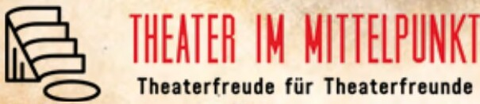
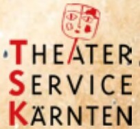
Freilufttheater präsentiert
zu Besuch im Klösterle Arriach
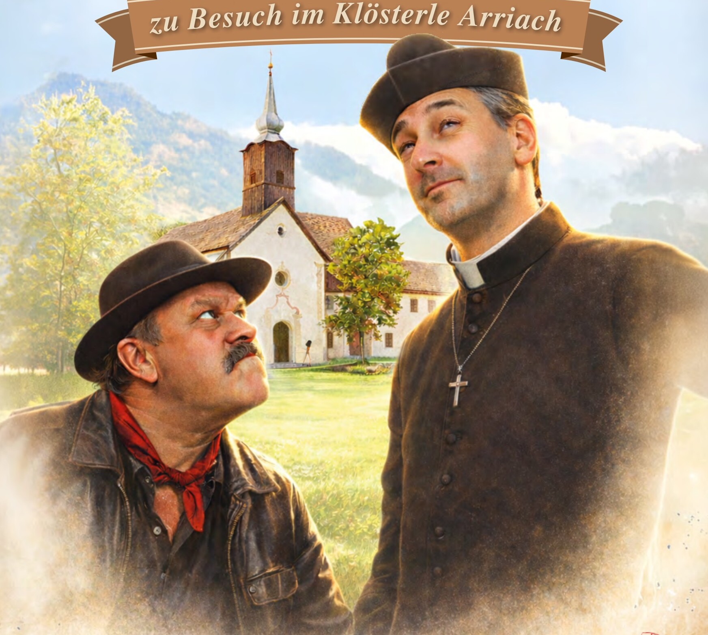
In einem kleinen italienischen Dorf, in dem die Kirchenglocken genauso laut sind wie die politischen Parolen, liefern sich zwei Männer ein ewiges Duell: Don Camillo, der hitzköpfige Priester mit direktem Draht nach oben, und Peppone, der ebenso leidenschaftliche wie unbeirrbare Bürgermeister – und überzeugte Vertreter der Arbeiterklasse.
Als die ausgebeuteten Landarbeiter genug haben und kurzerhand in den Streik treten, steht das Dorf Kopf: Transparente flattern, Parolen hallen über den Marktplatz – und plötzlich sind sich Don Camillo und Peppone uneinig wie selten zuvor… oder vielleicht doch erstaunlich einig? Denn während der eine göttliche Gerechtigkeit predigt, kämpft der andere für weltliche – und beide mischen kräftig im Chaos mit.
Mitten im Durcheinander kommt es zur alles entscheidenden Wette: Wer schafft es, die Streikenden auf seine Seite zu ziehen? Was als harmloser Wettstreit beginnt, entwickelt sich zu einem urkomischen Schlagabtausch voller Tricks, Taktik und überraschender Wendungen – denn der Ausgang ist alles andere als vorhersehbar.
Zwischen hitzigen Reden, himmlischen Eingebungen und handfesten Dorfintrigen zeigt sich: So verschieden Don Camillo und Peppone auch sind – ohne einander geht es einfach nicht. Und vielleicht gewinnt am Ende ja jemand ganz anderes…
Ein turbulentes, pointenreiches Theatervergnügen über Macht, Moral und Menschlichkeit – mit viel Herz, Humor und der Erkenntnis, dass selbst die größten Gegensätze manchmal am selben Strang ziehen.
Frei nach der Komödie von Gerold Theobaldt nach dem Roman „Mondo Piccolo – Don Camillo“ von Giovannino Guareschi.
Fassung für Theater im Mittelpunkt von Robert Smolej.
Dramaturgie: Robert Smolej
Regie: Robert Smolej & Markus Johann Brandstätter
Ohne ihre Unterstützung wäre dieses Stück nicht möglich.
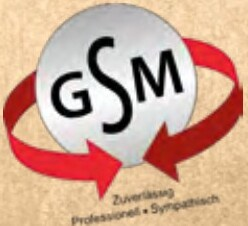
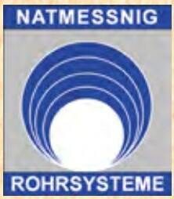
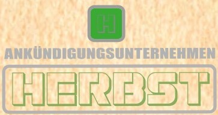
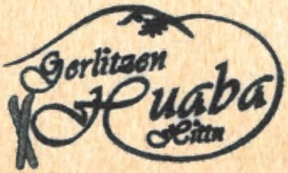
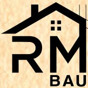
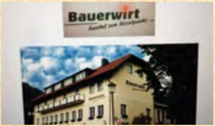
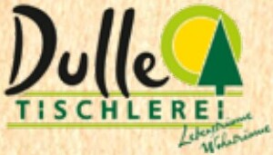
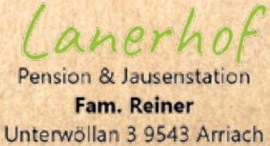
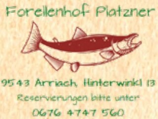
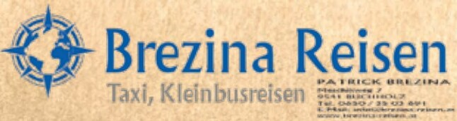
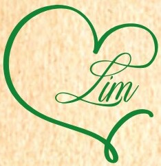
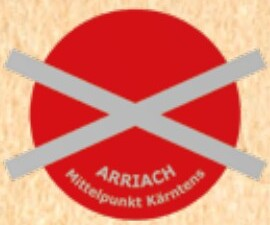
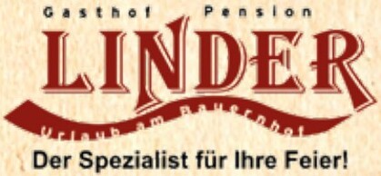
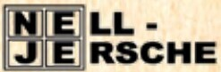
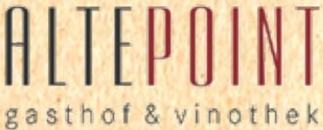
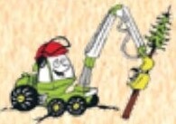
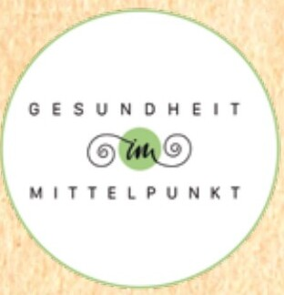
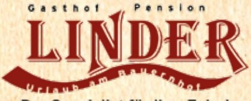
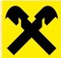
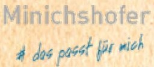
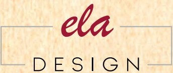
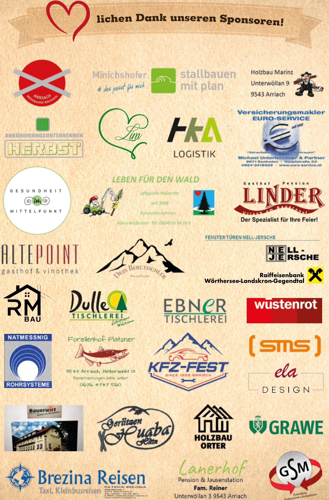
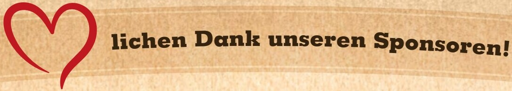
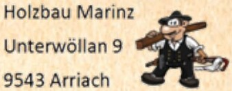